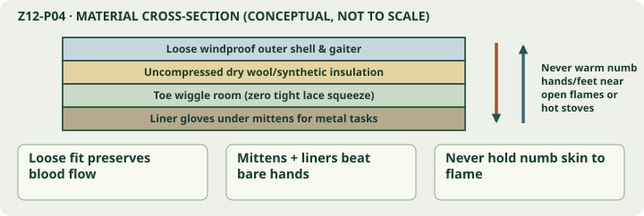

Z12-P04 · Extreme environments · Adapted historical material
Protect boots, socks, toes and mittens from freeze-up and constriction
Preserve extremity circulation and hand dexterity across long subfreezing outings.
When it applies · Winter hiking, camping and stranded emergencies below 32°F (0°C).
Equipment · Properly fitted insulated winter boots (room to wiggle toes), dry wool/synthetic spare socks and loose insulated mittens with liner gloves.

Actions
- Wear insulated boots sized with room for thick socks without squeezing—tight laces or cramming two thick sock pairs into snug boots restricts blood flow and accelerates toe frostbite.[E10, T04, ED]
- Prefer insulated mittens over five-finger gloves in severe cold (fingers share warmth together), wearing thin liner gloves underneath so bare skin never touches freezing metal tools or stove parts.[E10, E15, ED]
- Keep spare dry socks protected in a waterproof bag and keep wet boots out of drifting snow overnight; never dry numb feet or damp boots right against open flames or hot coals.[E10, T04, C02]
Failure recognition · Jamming extra socks into tight boots until toes go numb, or removing mittens bare-handed in subzero wind to adjust metal bindings.[E10, T04, E15]
Verify · Confirm toes wiggle freely inside winter boots, dry spare socks remain sealed dry and thin liners cover fingers during brief fine tasks.[E10, T04, ED]
Stop or change course · Persistent toe/finger numbness, clumsy loss of grip or firm/waxy skin stops outdoor work—move to shelter, check for hypothermia and seek medical care.[T04, T03, E06]
Evidence and editorial notes
- C02 · USDA Forest Service / Smokey Bear · Smokey Bear’s Campfire Safety Guide (agency PDF)
- Section: Build your campfire; choose a location · Conditions: Where campfires are currently permitted
Support: Use an established fire ring where required or available. Protect the area from nearby combustible materials, avoid windy conditions and keep water ready.
Limitations: Site clearances vary by fuel load, slope, and wind; no universal safe radius fits all terrain. · Conflicting evidence: None; aligns with USFS-FIRE.
Editorial note: Grounds site-selection and ring-preparation procedures. · Specialist reviewer: Fire prevention and land management
Primary source · checked 2026-11-24 - E06 · CDC · Preventing Hypothermia (current web edition)
- Section: Recognizing and treating hypothermia · Conditions: Cold wet exposure; signs such as confusion, slurred speech, fumbling or drowsiness
Support: Suspected hypothermia warrants prompt help and protection from further cooling. It can occur above freezing if wet or chilled.
Limitations: Early mild shivering can mask rapidly worsening judgment impairment. · Conflicting evidence: None; aligns with ARC and WMS guidance.
Editorial note: Anchors exposure-to-medical escalation thresholds. · Specialist reviewer: Wilderness medicine
Primary source · checked 2026-11-24 - E10 · NWS · What To Do If You're Caught in a Winter Storm (current web edition)
- Section: Outside > Protect yourself from frostbite and hypothermia · Conditions: Outdoor winter storm
Support: Keep clothing dry and avoid overexertion. Wetness accelerates cooling.
Limitations: Cotton retains moisture and accelerates conductive and evaporative heat loss. · Conflicting evidence: None; reinforces moisture-management layering.
Editorial note: Links sweat management to overnight insulation integrity. · Specialist reviewer: Cold-weather shelter and wilderness medicine
Primary source · checked 2026-11-24 - E15 · NWS · Cold Weather Safety (current web edition)
- Section: Cold Weather Safety > Wind Chill and Dressing for Cold · Conditions: Cold, windy conditions where exposed skin cools rapidly
Support: Wind removes the thin warm air boundary layer around skin and permeable fabrics, sharply accelerating heat loss and frostbite onset; windproof outer shells and sheltered microclimates mitigate convective loss.
Limitations: Wind chill charts apply to exposed skin and do not change freezing point of water or equipment. · Conflicting evidence: None; clarifies physical mechanism of convective heat loss.
Editorial note: Supports wind-block geometry, shell layering, and wind-chill risk decisions. · Specialist reviewer: Cold-weather shelter and meteorology
Primary source · checked 2026-11-24 - T03 · CDC · Preventing Hypothermia (current web edition)
- Section: Warning signs; What to do · Conditions: Cold exposure and suspected hypothermia
Support: Confusion, slurred speech and drowsiness are warning signs. Obtain medical attention and protect from further cold.
Limitations: Shivering may stop as hypothermia worsens; absence of shivering is not reassurance. · Conflicting evidence: None; aligns with WMS cold guidelines.
Editorial note: Core neurological red-flag trigger for stopping activity and calling rescue. · Specialist reviewer: Wilderness medicine
Primary source · checked 2026-11-24 - T04 · Wilderness Medical Society · Frostbite clinical practice guideline 2024 update (2024)
- Section: Field treatment scenarios and Table 1 · Conditions: Suspected frostbite outside immediate medical care
Support: Avoid refreezing. Whether to actively thaw depends on ability to keep tissue thawed and evacuate. Detailed treatment requires clinical review.
Limitations: Field assessment cannot reliably determine final tissue depth. · Conflicting evidence: Supersedes outdated rubbing or snow-pack thawing myths.
Editorial note: Retained for cross-zone cold-injury stop boundaries. · Specialist reviewer: Wilderness medicine
Primary source · checked 2026-11-24
Source lineage · B012-P06 boots/socks/mittens and WMS frostbite; adapted historical material · Classification · Adapted historical material.